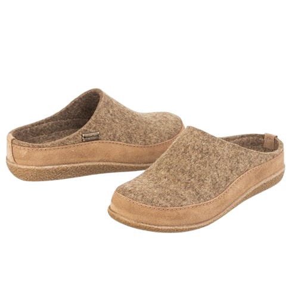

01
Проблем
Паданията са чести и могат да причинят сериозни травми, а страхът от движение намалява самостоятелността.
02
Реалността
Помощта често идва твърде късно, а малки препятствия могат да доведат до травми и загуба на самостоятелност.
03
Нашето решение
Safe Steps са интелигентни пантофи, които следят походката и изпращат известия при риск от падане.
Нашата мисия
Да направим дома на възрастните хора по-безопасен и да върнем увереността в движението им, като използваме технологиите в услуга на човека. Създаваме решения, които не само реагират след инцидент, а помагат да се предотврати рискът още преди да се случи.
С Anteros всяка стъпка има значение – осигуряваме безопасност, спокойствие и независимост, без да ограничаваме свободата на движение. Пантофите и приложението следят походката, разпознават рисковете и реагират навреме, а близките получават спокойствие, защото помощта винаги е близо.
Пантофите Safe Steps анализират походката и откриват дори малки промени, които могат да доведат до риск. С Anteros грижата е превенция и увереност във всяка стъпка, за да могат възрастните хора да запазят независимостта си, а семействата им да бъдат спокойни.
Как работят Safe Steps?
В стелката на пантофите са вградени интелигентни сензори за натиск, акселерометър и жироскоп, които следят движението и походката на потребителя в реално време. Те улавят промени в стъпките, равновесието и натиска при ходене, за да разпознаят риск от падане още преди да се е случило.
Събраните данни се изпращат към мобилното приложение, което ги анализира автоматично. При необичайни движения или инцидент системата веднага изпраща известие до настойника или близките, осигурявайки бърза реакция и спокойствие.
Приложението следи и ежедневната активност, като показва графики и отчети за стъпките и промените в походката с времето. Така Safe Steps се превръща в дискретен и надежден помощник за безопасност, който дава увереност както на възрастния човек, така и на неговите близки.

Защо да изберете Safe Steps?
Превенция на падания
Safe Steps не просто реагира след инцидент – пантофите следят походката и движението в реално време, улавят всяка промяна в стъпките, равновесието и натиска при ходене. Системата разпознава необичайни движения и потенциални рискове, като изпраща предупреждения още преди да се е случило падане, намалявайки вероятността от сериозни травми.
Спокойствие за близките
Мобилното приложение позволява на настойниците и семействата да следят безопасността на своите близки дистанционно. При необичайни движения или инцидент приложението изпраща автоматично известие в реално време, така че помощта да пристигне веднага – дори когато не сте физически наблизо.
Подкрепа на независимостта
Safe Steps позволява на възрастните хора да запазят своята самостоятелност и увереност. Те могат да се движат свободно в дома си, без страх, като същевременно знаят, че системата следи безопасността им и ще сигнализира при опасност. Това съчетава свобода с защита, без да ограничава ежедневните им дейности.
Интелигентна и дискретна технология
В стелките на пантофите са вградени сензори за натиск, акселерометър и жироскоп, които анализират походката и активността на потребителя. Приложението представя данните под формата на лесни за разбиране графики и отчети, позволявайки наблюдение и превенция, без да нарушава комфорта или личното пространство на потребителя.